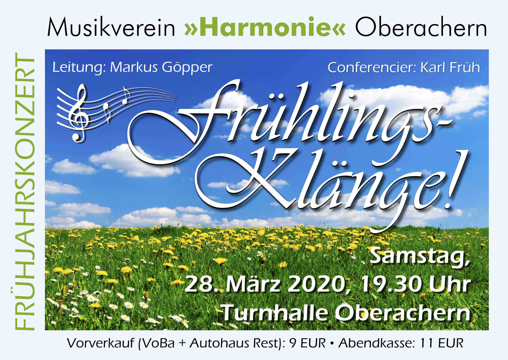

Aktuell
Aufgrund der aktuellen Ereignisse rund um COVID-19 müssen wir unser Frühlingskonzert abgesagen. Weitere Informationen werden hier folgen.
Wir lassen Oberachern musikalisch erklingen!
Aufgrund der aktuellen Ereignisse rund um COVID-19 müssen wir unser Frühlingskonzert abgesagen. Weitere Informationen werden hier folgen.
Wir sind die Harmonie Oberachern. Der Musikverein aus Oberachern. Wir sind ein Blasorchestor mit aktuell über 70 Musikern. Unser Repertoire reicht von volkstümlichen Polka und Walzer bis hin zu sinfonischen Werken.
Für dieses Jahr haben wir uns wieder viel vorgenommen. Hier geht es zu unseren Terminen.

Herzlich Willkommen, sagen die Jungmusiker der Harmonie Oberachern. Es freut uns, dass Ihr ein Blick auf unsere Seite werft. Hier findet Ihr Termine und Berichte oder auch Fotos von unseren letzten Veranstaltungen. Viel Spaß wünscht euch das Jugendteam der Harmonie.
Die verantwortliche Stelle für die Datenverarbeitung auf dieser Website ist:
Musikverein Harmonie Oberachern e.V
Karin Rest
Lorenz-Oechsler-Weg
29
77855 Achern
Die verantwortliche Stelle entscheidet allein oder gemeinsam mit anderen über die Zwecke und Mittel der Verarbeitung von personenbezogenen Daten (z.B. Namen, Kontaktdaten o. ä.).
Nur mit Ihrer ausdrücklichen Einwilligung sind einige Vorgänge der Datenverarbeitung möglich. Ein Widerruf Ihrer bereits erteilten Einwilligung ist jederzeit möglich. Für den Widerruf genügt eine formlose Mitteilung per E-Mail. Die Rechtmäßigkeit der bis zum Widerruf erfolgten Datenverarbeitung bleibt vom Widerruf unberührt.
Als Betroffener steht Ihnen im Falle eines datenschutzrechtlichen Verstoßes ein Beschwerderecht bei der zuständigen Aufsichtsbehörde zu. Zuständige Aufsichtsbehörde bezüglich datenschutzrechtlicher Fragen ist der Landesdatenschutzbeauftragte des Bundeslandes, in dem sich der Sitz unseres Unternehmens befindet. Der folgende Link stellt eine Liste der Datenschutzbeauftragten sowie deren Kontaktdaten bereit: https://www.bfdi.bund.de/DE/Infothek/Anschriften_Links/anschriften_links-node.html.
Ihnen steht das Recht zu, Daten, die wir auf Grundlage Ihrer Einwilligung oder in Erfüllung eines Vertrags automatisiert verarbeiten, an sich oder an Dritte aushändigen zu lassen. Die Bereitstellung erfolgt in einem maschinenlesbaren Format. Sofern Sie die direkte übertragung der Daten an einen anderen Verantwortlichen verlangen, erfolgt dies nur, soweit es technisch machbar ist.
Angaben gemäß § 5 TMG
Musikverein Harmonie Oberachern e.V.
Lorenz-Oechsler-Weg 29
77855 Achern
Karin Rest
Lorenz-Oechsler-Weg 29
77855 Achern
Telefon: 07841-3850
E-Mail: vorstand@mvoberachern.de
Die Inhalte unserer Seiten wurden mit größter Sorgfalt erstellt. Für die Richtigkeit, Vollständigkeit und Aktualität der Inhalte können wir jedoch keine Gewähr übernehmen. Als Diensteanbieter sind wir gemäß § 7 Abs.1 TMG für eigene Inhalte auf diesen Seiten nach den allgemeinen Gesetzen verantwortlich. Nach §§ 8 bis 10 TMG sind wir als Diensteanbieter jedoch nicht verpflichtet, übermittelte oder gespeicherte fremde Informationen zu überwachen oder nach Umständen zu forschen, die auf eine rechtswidrige Tätigkeit hinweisen. Verpflichtungen zur Entfernung oder Sperrung der Nutzung von Informationen nach den allgemeinen Gesetzen bleiben hiervon unberührt. Eine diesbezügliche Haftung ist jedoch erst ab dem Zeitpunkt der Kenntnis einer konkreten Rechtsverletzung möglich. Bei Bekanntwerden von entsprechenden Rechtsverletzungen werden wir diese Inhalte umgehend entfernen.
Unser Angebot enthält Links zu externen Webseiten Dritter, auf deren Inhalte wir keinen Einfluss haben. Deshalb können wir für diese fremden Inhalte auch keine Gewähr übernehmen. Für die Inhalte der verlinkten Seiten ist stets der jeweilige Anbieter oder Betreiber der Seiten verantwortlich. Die verlinkten Seiten wurden zum Zeitpunkt der Verlinkung auf mögliche Rechtsverstöße überprüft. Rechtswidrige Inhalte waren zum Zeitpunkt der Verlinkung nicht erkennbar. Eine permanente inhaltliche Kontrolle der verlinkten Seiten ist jedoch ohne konkrete Anhaltspunkte einer Rechtsverletzung nicht zumutbar. Bei Bekanntwerden von Rechtsverletzungen werden wir derartige Links umgehend entfernen.
Die durch die Seitenbetreiber erstellten Inhalte und Werke auf diesen Seiten unterliegen dem deutschen Urheberrecht. Die Vervielfältigung, Bearbeitung, Verbreitung und jede Art der Verwertung außerhalb der Grenzen des Urheberrechtes bedürfen der schriftlichen Zustimmung des jeweiligen Autors bzw. Erstellers. Downloads und Kopien dieser Seite sind nur für den privaten, nicht kommerziellen Gebrauch gestattet. Soweit die Inhalte auf dieser Seite nicht vom Betreiber erstellt wurden, werden die Urheberrechte Dritter beachtet. Insbesondere werden Inhalte Dritter als solche gekennzeichnet. Sollten Sie trotzdem auf eine Urheberrechtsverletzung aufmerksam werden, bitten wir um einen entsprechenden Hinweis. Bei Bekanntwerden von Rechtsverletzungen werden wir derartige Inhalte umgehend entfernen.
Die Nutzung unserer Webseite ist in der Regel ohne Angabe personenbezogener Daten möglich.
Soweit auf unseren Seiten personenbezogene Daten (beispielsweise Name, Anschrift oder
eMail-Adressen) erhoben werden, erfolgt dies, soweit möglich, stets auf freiwilliger Basis.
Diese Daten werden ohne Ihre ausdrückliche Zustimmung nicht an Dritte weitergegeben.
Wir weisen darauf hin, dass die Datenübertragung im Internet (z.B. bei der Kommunikation per
E-Mail) Sicherheitslücken aufweisen kann. Ein lückenloser Schutz der Daten vor dem Zugriff durch
Dritte ist nicht möglich.
Der Nutzung von im Rahmen der Impressumspflicht veröffentlichten Kontaktdaten durch Dritte zur
Übersendung von nicht ausdrücklich angeforderter Werbung und Informationsmaterialien wird
hiermit ausdrücklich widersprochen. Die Betreiber der Seiten behalten sich ausdrücklich
rechtliche Schritte im Falle der unverlangten Zusendung von Werbeinformationen, etwa durch
Spam-Mails, vor.